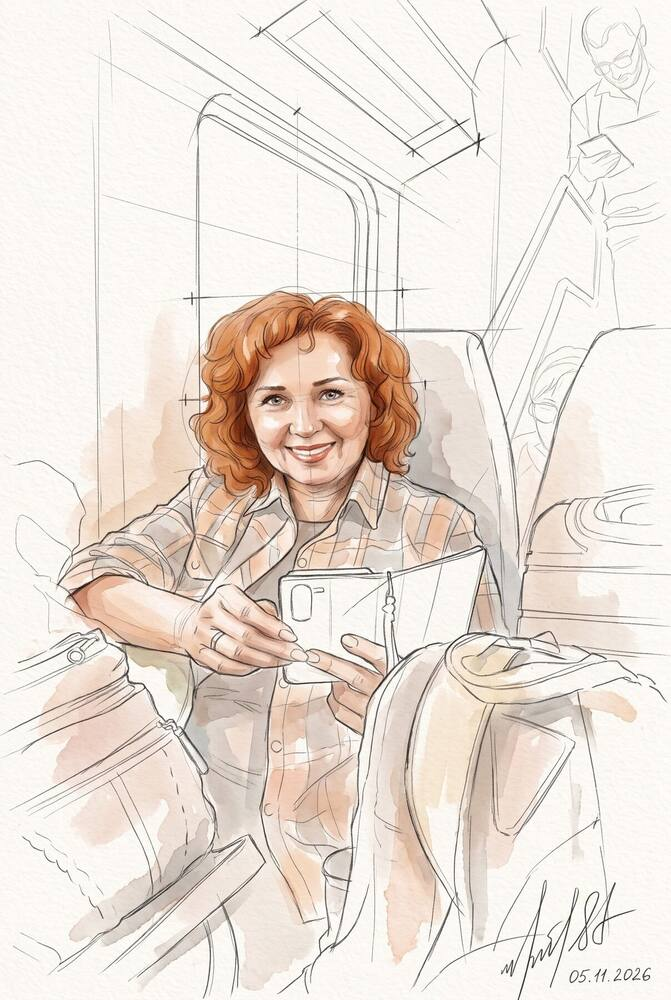
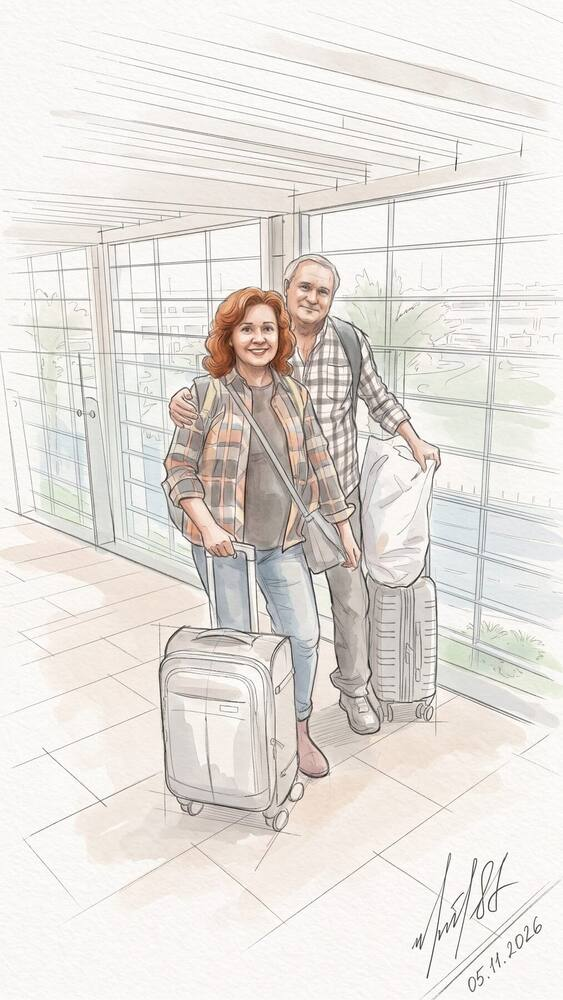
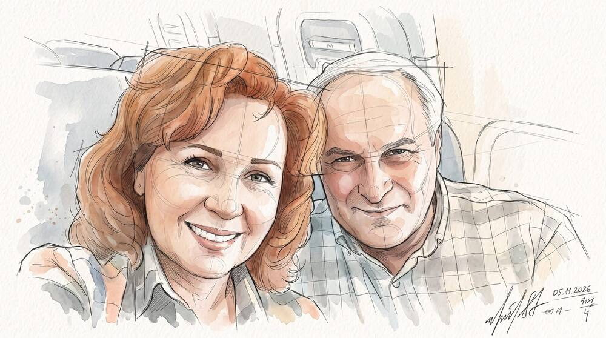
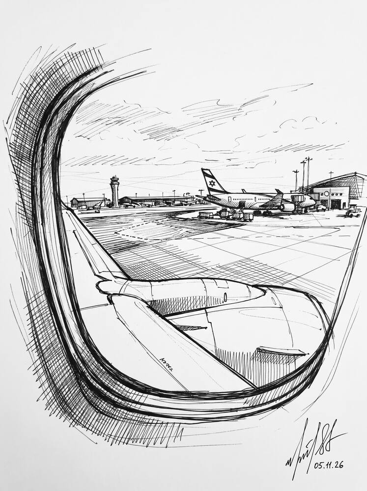
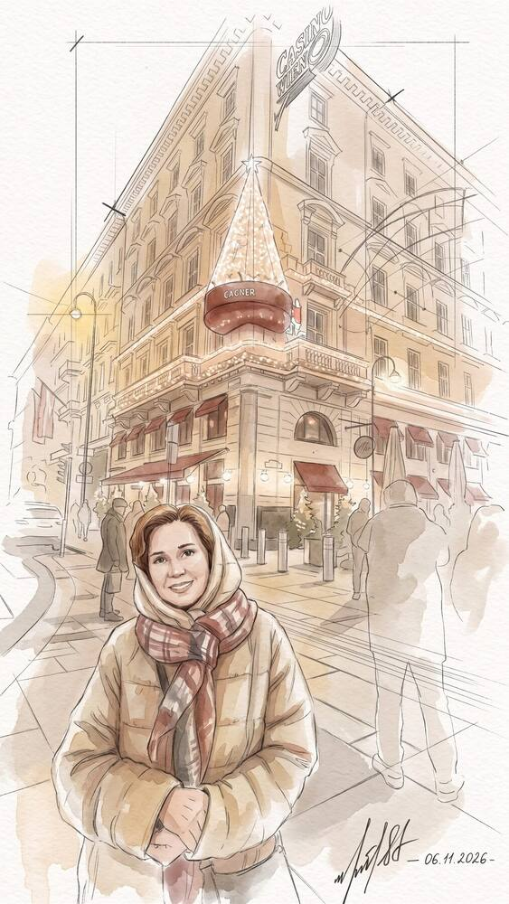
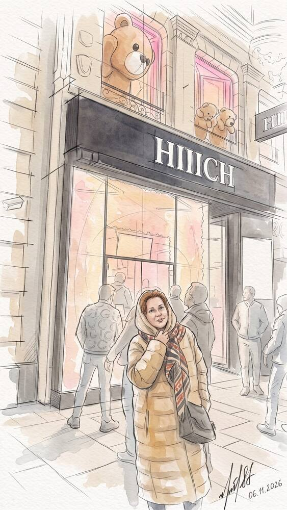
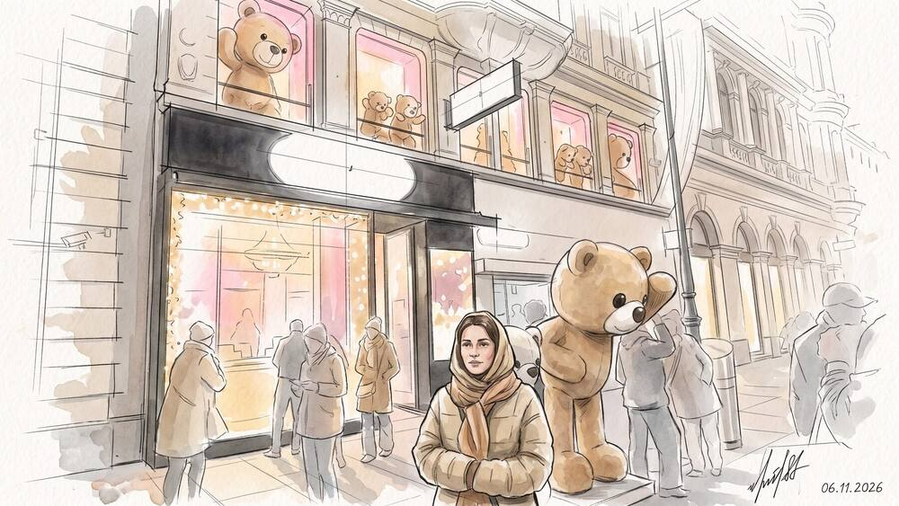
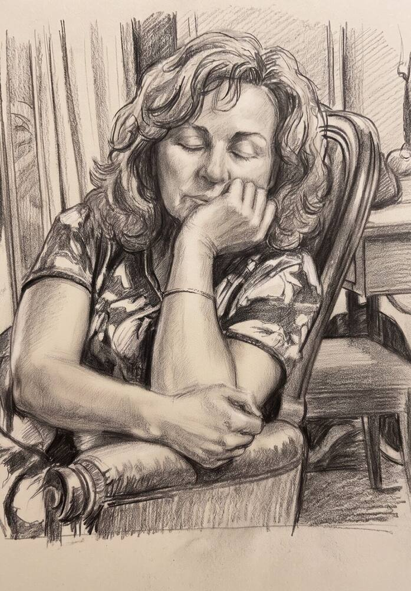

Часть 1
Вена. Начало пути
Рисунки Стаса, 5–6 ноября 2026
Рисунок 5: улица у Оперы
В пути
Всё началось с чемоданов у двери. Впереди пять дней в Вене — без спешки, вдвоём.
Аэропорт, самолёт, крыло за иллюминатором — и уже под вечер внизу показались огни австрийской столицы.




Первые шаги по Вене
Мы поселились в самом центре, в маленьком пансионе Pension Suzanne (Пансьон Сюзанн) на Walfischgasse (Вальфишгассе — Китовый переулок). Отсюда пара минут до Staatsoper (Штаатсопер — Венская государственная опера) и до Kärntner Straße (Кернтнер-штрассе — главная пешеходная улица).
Первый вечер — просто пройтись. Ноябрь, но город уже готовится к Рождеству: светятся фасады, в витринах игрушки, на улице нас встречает большой плюшевый мишка.



Отдых
День был длинный. Немного посидеть, вытянуть ноги — и думать о том, что всё самое интересное ещё впереди.
